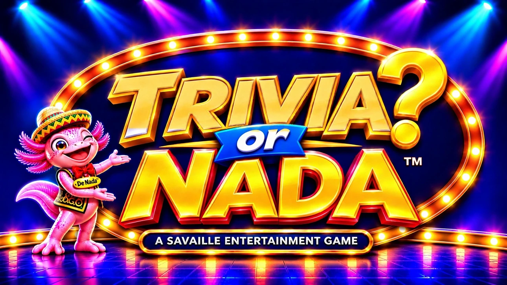

20 questions. Four rounds. Bank your points — or walk away with nada.
Score 1,000+ for a bonus round · A perfect 1,280 unlocks the Legend Gauntlet — can you beat it?
Game Pace
One scored run a day — same 20 questions for all. Come back tomorrow to keep your streak.
That challenge couldn't be loaded — the link may be incomplete or from a different game version. No game started; play a fresh Gauntlet instead.
More ways to play
Enjoying the game. Leave a tip
Session best: —
Free to play. No app. No sign-in.
Loading questions\u2026
★ Creator access
Creator games are practice only — labelled Creator, never saved to leaderboards, the Hall of Fame, or a backup.
How to play
- Round 1 — Easy, 5 pts each. Q5 is typed double-or-nothing: right doubles your total; wrong loses everything. Pass at its gate or on the question.
- Round 2 — Harder, 10 pts each. Q10, typed: right doubles your total; wrong loses only the round's bank. Pass at its gate or on the question.
- Round 3 — Hard, 20 pts each. Q15 works like Q10 — Pass at its gate or on the question.
- Round 4 — Very hard, 40 pts each, all typed — no multiple choice. Q16–Q19: right 40, wrong nothing. Pass allowed — a timeout counts as a pass. Pictures and capitals show; you type the answer. Q20, last: pick your wager before you see it — 1 point up to your whole total. Right adds it; wrong takes it away. Pass at the wager gate or the ready gate ends the game with your total kept; once you tap “I'm ready” there is no Pass — a timeout counts as wrong and loses the wager. Wager everything: double-or-nothing — double it all, or nada. Total of 0: nothing at stake.
- Bonus round. Finish with 1,000+ — but not a perfect 1,280 — and a 5-question BONUS ROUND starts: Super hard typed questions on the Round 4 clock (45 seconds; 90 at Relaxed), spelling counts. First four: 5 points each; wrong costs nothing, Pass allowed, timeout = pass. Fifth, the doubler: right doubles those points (four right: 20 → 40, the round's max); wrong, pass, or timeout, you keep them. The doubler adds no points. Bonus points count toward your saved score, capped at 1,280 total — up to perfect, never past.
- Legend Gauntlet. A perfect 1,280 skips the bonus round: results offer “Start the Legend game” — 20 questions, 4 rounds, hardest tier only, all typed, same points (5/10/20/40) and wager finales, clock: 20 seconds each, 30 for Round 4 and finales (40 / 60 at Relaxed). Rounds climb: Round 1 Super hard, Round 2 Extremely hard, Round 3 Ludicrously hard, Round 4 Impossibly hard, final question Genius Level. Scores save to the same pace board as “Legend Gauntlet”. No bonus round.
- Legends Hall of Fame. The cover ranks Perfect Games and Legend Games separately, best first. A bonus-capped 1,280 is neither — only a real perfect game counts.
- Typed answers & spelling. Round 1 is never strict — sound-alike answers score, for names, numbers, and short words; no spelling warning. Partial names count — surname alone (“Lenin”), name without title (“Elizabeth II” for Queen Elizabeth II) — Round 1 only. Q10 / Q15: exactly one is strict per Gauntlet, the other forgiving — which flips each Gauntlet. Round 4 is always strict — Q16–Q20 marked SPELLING COUNTS, spelled exactly. Strict judges the letters: accents, the ʻokina, apostrophes, hyphens and other punctuation are never part of a spelling, so “Oahu” scores for “Oʻahu” and “Dali” for “Dalí” — but a wrong, extra or missing letter still fails. Forgiving finales show no warning and judge sound-alike. Every miss reveals the correct answer; accepted near-misses show the correct spelling. Pass: typed questions have a Pass button — Round 4, practice, the bonus round. Passing scores nothing, loses nothing banked, and reveals the answer. The wager finales (Q5/Q10/Q15/Q20) each open on a gate screen — Q20's wager picker first, then a ready screen for all four. Pass lives on the gates — passing there keeps every point and the question is never shown; passing Q20 at a gate ends the game at your total (and that game can't be a true perfect). Tap I'm ready and the question appears with the clock running: Q5/Q10/Q15 carry Pass on the question too — it keeps every point, reveals the answer, and the game goes on — but a timeout still counts as a miss, and Leave settles the finale as a miss and moves on to the next question. Q20 has no Pass once its wager is locked. Quitting from a gate is a clean exit — the game ends and your score saves as-is.
- Pace. Standard: 30 seconds a question; 45 for Round 4 and finales. Relaxed: 60 / 90 — same game, longer clock. Each pace keeps its own cover board.
- Sound. Chime: right. Buzz: wrong. Rising run: landed wager. Tick: time running out. Fanfare: perfect game. On by default from your first tap; switch in ☰ Menu → Sound. Remembered on this device.
- The pool: 8,000+ questions — general trivia, famous faces, landmarks, flags, map shapes, paintings, movie stills, capitals (countries, US states, Canadian provinces) — plus banks of law, chemistry, periodic table, sciences, medical, pop culture, music, advertising, marketing, riddles, sports, history, Hawaii, and Canada, mixed into the Gauntlet and Wildcard. One Trivia question per Gauntlet round; at most one LeAnn Rimes and one video game question per Gauntlet or Wildcard game. Practice holds the full Trivia and 119-question LeAnn Rimes collections. Not a geography test: capitals, maps, and flags together appear only a few times per game — practice serves them in full.
- Most questions show a “Why this is right:” line after your answer, and in the review. Only verified ones appear — no line is normal.
Free to play: 20 questions, 4 rounds, wager finales, a new Daily Gauntlet daily, practice in 24 categories, live leaderboards. No download, no sign-up.
Board pace
Legends Hall of Fame
This device's Perfect and Legend games, best first.
Perfect Games
No perfect games yet — finish a perfect Gauntlet to enter the Hall of Fame.
Legend Games
No Legend games yet — finish a perfect game to unlock the Legend game.
Hall of Fame — Shared Standard pace
Perfect and Legend games · all players · Standard pace.
Perfect Games
Legend Games
Hall of Fame — Shared Relaxed pace
Perfect and Legend games · all players · Relaxed pace.
Perfect Games
Legend Games
SHARED LEADERBOARD —
ALL TIME — STANDARD PACE
Standard pace · all players.
ALL TIME HIGH SCORES
SHARED LEADERBOARD —
ALL TIME — RELAXED PACE
Relaxed pace · all players · never ranked against Standard.
ALL TIME HIGH SCORES
SHARED LEADERBOARD —
THIS WEEK — STANDARD PACE
Standard pace · all players · this week only.
THIS WEEK
SHARED LEADERBOARD —
THIS WEEK — RELAXED PACE
Relaxed pace · all players · this week only.
THIS WEEK
High scores on this device — Standard pace
Browser only — not shared. Move with Back up.
No finished games on this device yet — your first score lands here.
High scores on this device — Relaxed pace
Browser only — not shared. Move with Back up.
No finished Relaxed games on this device yet.
BEST SCORE PER PLAYER
Sudden Death — Shared leaderboard — Standard pace
Sudden Death · all players · Standard pace.
One miss ends it — ranked apart.
Sudden Death
Sudden Death — Shared leaderboard — Relaxed pace
Sudden Death · all players · Relaxed pace.
One miss ends it — ranked apart.
Sudden Death
Sudden Death — High scores on this device — Standard pace
This browser only — not shared. Move them with Back up.
Sudden Death only — one miss ends it, ranked apart.
No finished Sudden Death games on this device yet.
Sudden Death — High scores on this device — Relaxed pace
This browser only — not shared. Move them with Back up.
Sudden Death only — one miss ends it, ranked apart.
No finished Relaxed Sudden Death games on this device yet.
Closest Wins — Shared leaderboard — Standard pace
Closest Wins · all players · Standard pace.
20 guesses, up to 60 pts each, 1,200 max — ranked apart.
Closest Wins
Closest Wins — Shared leaderboard — Relaxed pace
Closest Wins · all players · Relaxed pace.
20 guesses, up to 60 pts each, 1,200 max — ranked apart.
Closest Wins
Closest Wins — High scores on this device
This device's Closest Wins scores — the shared board is above. 20 guesses, up to 60 pts each, 1,200 max. Earlier 10-question scores stay as recorded.
No Closest Wins games on this device yet — open the ☰ Menu to play.
The shared leaderboard lives at triviaornada.com
Play there to see everyone's scores and post yours.
Back up your scores
Your scores, profile, and Daily streak live only in this browser — every browser and device keeps its own. Export here, import in the other browser to carry them over. Importing adds new scores, skips duplicates, never deletes. Profile and streak move only into a browser without its own.
Checking your saved scores…
Your profile
Saved on this device.
Player
Level 1 · Trivia Fact Finder
0 qualifying credits
0 lifetime points
Account
Save your progress across devices — free.
One more step — pick your player name.
This name is reserved for your account. Your scores, credits, and avatars come with you whichever name you end up with.
That name is taken. Tap one of these instead — or type a different name:
This account already has a profile.
Your account is linked to a profile from another device, and this device has its own guest profile. The two are never merged — pick which one this device uses.
Player✓ Member
★ Founding Player
Delete your account? This starts a 30-day hold. During the hold your scores stay on the leaderboards with a (D) after your name, and signing back in cancels the deletion completely — everything is restored. After 30 days your account, reserved name, and scores are erased for good, and your name is freed for anyone to claim.
Trophy Room — Avatar Collection
15 avatars — earned through play, never bought. Tap a picture to enlarge it; wear any unlocked avatar from the big view. Your avatar shows beside your name on results and your score card.
Category Mastery
0 of 24 categories mastered
Medals from your best score per category:
Bronze 40+, Silver 70+, Gold 90+ (mastered).
A perfect 100 earns a 🏆 Gold Trophy — COMPLETE.
How credits are earned
Qualifying credits unlock your avatars. You earn them by finishing games:
- Finish a Trivia Gauntlet (20 questions): 1 credit
- Finish the Daily Gauntlet: 1 credit
- Finish a Legend Gauntlet: 1 credit
- Finish a Challenge game: 1 credit
- Finish a Closest Wins game (20 questions): 1 credit
- Score a perfect 1,280 in a regular Gauntlet: 1 extra credit (2 for that game)
No credits for Practice rounds, Sudden Death, or games you don't finish. Credits can't be bought — every avatar is earned by playing.
Your Trivia Level is separate — it grows with the points from every game you finish.
How credits are earned: +1 per finished Gauntlet, Daily, Legend, Challenge, or Closest Wins game, +1 extra for a natural perfect 1,280 (2 total). Practice, Sudden Death, creator, and unfinished games earn none. Kept on this device only.
Lifetime points & Trivia Level: separate from credits — every finished game adds its final score (Closest Wins out of 1,200, Practice out of 100); quit games count once saved; creator games never. Your total sets your Level: 1 Fact Finder up to 9 TRIVIA GOD.
Lifetime points & Trivia Level: separate from credits — every finished game adds its final score (Closest Wins out of 1,200, Practice out of 100); quit games count once saved; creator games never. Your total sets your Level: 1 Fact Finder up to 9 TRIVIA GOD.
Practice rounds
10 points each. Warm up a category:
About · How to Play · Categories · Quiz · FAQ · Privacy Policy
Version 2026-11-23-3
NEW AVATAR UNLOCKED
LEVEL UP
Question1 / 20
Round1
Score0
Streak0
⏱ 0
Tap anywhere to close — the clock is still running.
Start practice?
(10 questions)
Player
Final Score
0
A perfect 1,280! You unlocked the Legend Gauntlet — hardest questions only, all typed, faster clock.
You played this game as “Player”. Add your name now and this score goes on this device's board under your name instead.
Review — every answer revealed
Question1 / 20
ModeClosest Wins
Score0
Exact hits0
⏱ 0
Player
Closest Wins — Final Score
0
You played this game as “Player”. Add your name now and this score goes on this device's board under your name instead.